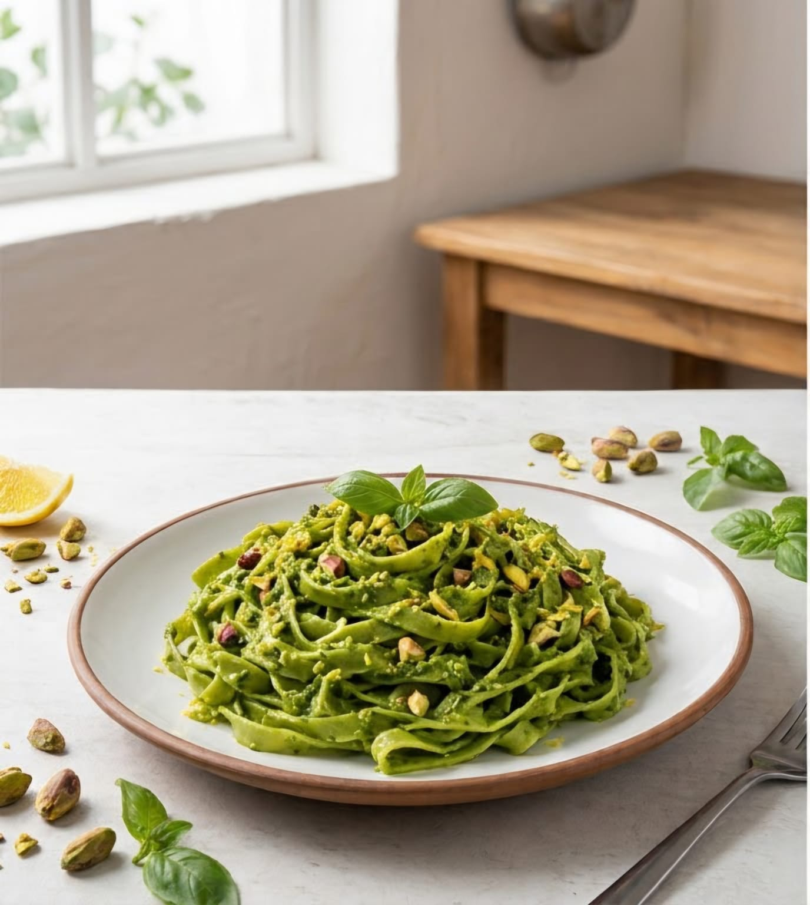

Receta 1
Fettuccine de Nopal al Pesto de Pistache y Limón
Una opción fresca, vibrante y llena de antioxidantes que resalta el tono verde natural de la pasta.
- Preparación: 15 minutos
- Porciones: 2 a 3 personas
Ingredientes
- 1 paquete (300 g) de Fettuccine de Nopal MILA
- 1 taza de hojas de albahaca fresca
- ½ taza de pistaches pelados (sin sal)
- 1 diente de ajo pequeño
- Jugo y ralladura de ½ limón amarillo (o limón real)
- ⅓ de taza de aceite de oliva extra virgen
- ⅓ de taza de queso parmesano rallado (opcional, o levadura nutricional para versión vegana)
- Sal de mar y pimienta negra recién molida al gusto
Preparación
- Cocina la pasta. Pon a hervir abundante agua con una pizca de sal. Agrega el Fettuccine MILA y cocina de 7 a 9 minutos hasta que esté al dente. Reserva ½ taza del agua de cocción antes de escurrir.
- Prepara el pesto. En un procesador de alimentos o licuadora, tritura los pistaches, la albahaca, el ajo, el queso parmesano, la ralladura y el jugo de limón. Vierte el aceite de oliva en forma de hilo mientras mezclas hasta obtener una salsa cremosa y rústica. Sazona con sal y pimienta.
- Integra. En un sartén amplio a fuego muy bajo, mezcla la pasta escurrida con el pesto. Agrega poco a poco el agua de cocción reservada para emulsionar y lograr que la salsa cubra bien cada cinta.
- Sirve. Emplata de inmediato y decora con unos cuantos pistaches troceados, hojas de albahaca y un chorrito extra de aceite de oliva.